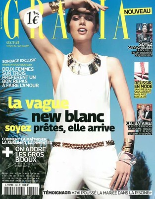
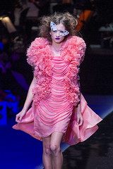
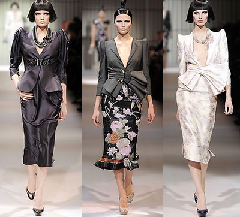
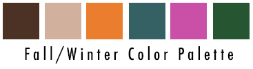

My name is Rachael Lilienthal. I am a junior at Syracuse University studying Information Management and Technology. I created this site to blend my passion for fashion a design with skills of technology and coding. When I am not doing my iSchool assignments you can find me shopping or looking at new trends in order to be as fashionable, sustainable and practical as possible. In this new day and age of technology, I find it almost too easy to spend money and time scrolling on online shops. My goal for this site is to act like an online database that holds all my favorite online shops.
I find that sometimes I am looking for a specific item and know all these sites that I just get overwhelmed and go blank on where I should be looking. To solve this issue that I and many of my friends have, I decided to categorize them and put them all in one place so next time I need a new dress I know exactly the stores I should be looking at.
  Before we get into the other pages holding all my favorite stores, lets talk about trends. These past couple of years the fashion industry has been getting more creative than ever. The main goal while analyzing trends is to look at it globally and interpret it from that. What’s staying and what’s going? Color-wise brown has been super popular, and its definitely staying for the fall. Neutrals will always be in, it’s a matter of how it’s styled and accessorized. Another color I see going to be super popular this fall and winter is orange. From looking at recent catwalks and fashion shows, different shades or orange has been all over from Gucci to Prada, making this fall and winter a little less grey. I have most excited for Y2K fashion coming back, specifically low rise, bright patterns and fun cropped tees from icons Paris Hilton and Britney Spears. Low rise jeans and track suit pants will be staying for a while, and wether trendy or not still, I plan to keep wearing them either way. Sometimes it’s not all about “what’s in” but what flatters your body type most and makes you feel good. This compilation of sites I put together has everything from super trendy pieces to staples everyone should have in their closet at all different price ranges.
